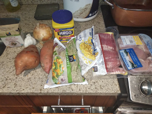
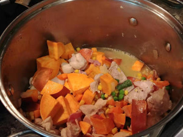
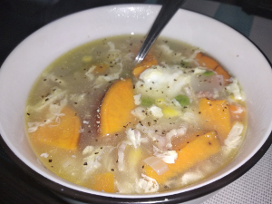

Chicken Corn Chowder
  
1. Ingredients
- Chicken, bacon, eggs, corn, yam, veggie mix, garlic, onion, cream of mushroom, salt, pepper
2. How to make it
- dice onion and sweet potato, and mince garlic
- cut bacon to 1 inch pieces
- cut chicken to bite size pieces
- heat up large cooking pot on medium high, and add olive oil
- put in garlic and onion, then wait for it to brown slightly
- add in bacon, then wait till it brown
- add in chicken, then wait till it’s mostly cooked
- add corn, vegetable mixed, and sweet potato
- mix it all together
- add water till it’s about 2 inches above the food
- turn stove to high and wait for boil
- once boiled, turn stove to medium, then add cream of mushroom
- once cream of mushroom is mostly dissolved, mix together 1 cup of corn starch with 1 cup of cold water
- mix the corn starch water slowly to the pot till it’s the consistansy you like
- crack 6 eggs and beat it
- once pot is boiling again, stir the soup slowly while pouring the egg in
- ready and serve
3. Chinese
- 玉米浓汤 / Yùmǐ nóng tāng / corn soup